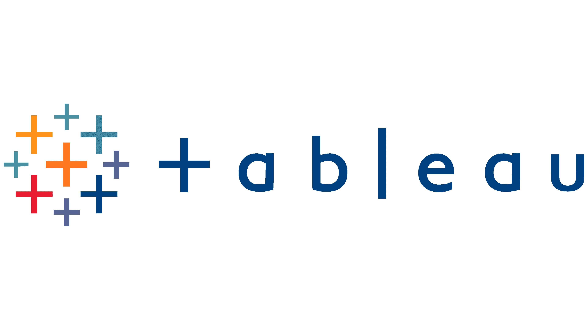

In this project, we utilized python libraries such as Pandas and Numpy to clean the Breast Cancer Wisconsin (Diagnostic) Data Set and create prediction models using
Logistic Regression, k-Nearest Neighbors Classifier, Decision Tree Classifier, and Artificial Neural Net (ANN), to conduct a thorough performance analysis and comparison of each model.
Seaborn libaries were used for data visualizations.
Researched Brahmagupta’s Theorem on cyclic orthodiagonal quadrilaterals and developed a generalized version for all quadrilaterals, constructing rigorous proofs
using Euclidean geometry, coordinate geometry
Retreving Data from coinmarketcap.com using API to gather real-time pricing information for various cryptocurrencies. Conducted an in-depth analysis of the price changes of multiple cryptocurrencies over the specified 90-day period, specifically the current volatility of Bitcoin
This is a SQL Data Exploration project where I cleaned the data using SQL and created custom queries that were used for Tableau Visualization.
In our SQL data cleaning project, we used advanced JOIN statements and UPDATE/SET operations to cleanse the dataset. We also developed new queries for easier data utilization.

You can see my Tableau Visualizations here. You will find the COVID Dataset DE project visualization along with a Seattle AirBnB Housing Dataset Visualization.
We've generated a dynamic visualization of the Data Professional dataset using Power BI. After data cleaning in MS Excel, we've provided the PBIX file for interaction and a PDF showcasing the visualization.